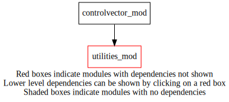
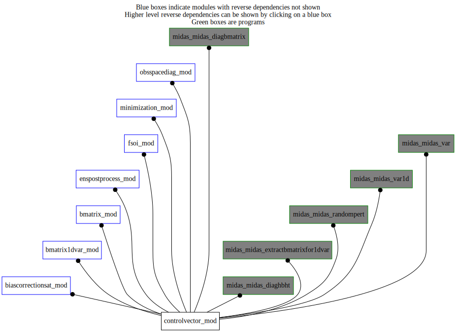

Dependency Diagrams:
 Direct Dependency Diagram¶
 Reverse Dependency Diagram¶
Description
MODULE controlVector_mod (prefix=’cvm’ category=’6. High-level data objects’)
- Purpose
The control vector and related information.
Quick access
- Types
- Variables
- Routines
cvm_getsubvector(),cvm_getsubvector_mpiglobal(),cvm_getsubvector_mpiglobal_r4(),cvm_getsubvector_r4(),cvm_indexfromlabel(),cvm_setupsubvector(),cvm_subvectorexists()Needed modules
utilities_mod: MODULE utilities_mod (prefix=’utl’ category=’8. Low-level utilities and constants’)Types
- type controlvector_mod/struct_cvm¶
Variables
- controlvector_mod/cvm_nvadim [integer,public]¶
- controlvector_mod/cvm_nvadim_mpiglobal [integer,public]¶
Subroutines and functions
- subroutine controlvector_mod/cvm_setupsubvector(label, bmatrixtype, dimvector)¶
- Arguments
label [character ]
bmatrixtype [character ]
dimvector [integer ]
- Called from
- Call to
- function controlvector_mod/cvm_indexfromlabel(subvectorlabel)¶
- Arguments
subvectorlabel [character ]
- Return
subvectorindex [integer ]
- Called from
cvm_subvectorexists(),cvm_getsubvector(),cvm_getsubvector_r4(),cvm_getsubvector_mpiglobal(),cvm_getsubvector_mpiglobal_r4()
- function controlvector_mod/cvm_subvectorexists(subvectorlabel)¶
- Arguments
subvectorlabel [character ]
- Return
exists [logical ]
- Called from
bcs_calcbias_tl(),bcs_calcbias_ad(),bcs_writebias(),bmat1d_bsetup(),bmat_setup(),osd_calcinflation()- Call to
- function controlvector_mod/cvm_getsubvector(controlvector, subvectorlabel)¶
- Arguments
controlvector (*) [real ,target]
subvectorlabel [character ]
- Return
subvector (*) [real ,pointer]
- Called from
bcs_calcbias_tl(),bcs_calcbias_ad(),bcs_writebias(),bmat1d_sqrtb(),bmat1d_sqrtbt(),bmat_sqrtb(),bmat_sqrtbt(),bmat_reducetompilocal(),bmat_expandtompiglobal(),osd_calcinflation()- Call to
- function controlvector_mod/cvm_getsubvector_r4(controlvector, subvectorlabel)¶
- Arguments
controlvector (*) [real ,target]
subvectorlabel [character ]
- Return
subvector (*) [real ,pointer]
- Called from
- Call to
- function controlvector_mod/cvm_getsubvector_mpiglobal(controlvector, subvectorlabel)¶
- Arguments
controlvector (*) [real ,target]
subvectorlabel [character ]
- Return
subvector (*) [real ,pointer]
- Called from
- Call to
- function controlvector_mod/cvm_getsubvector_mpiglobal_r4(controlvector, subvectorlabel)¶
- Arguments
controlvector (*) [real ,target]
subvectorlabel [character ]
- Return
subvector (*) [real ,pointer]
- Called from
- Call to
{kind=link}
{kind=link}